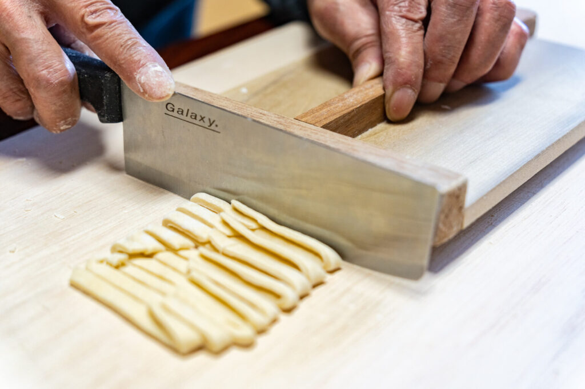
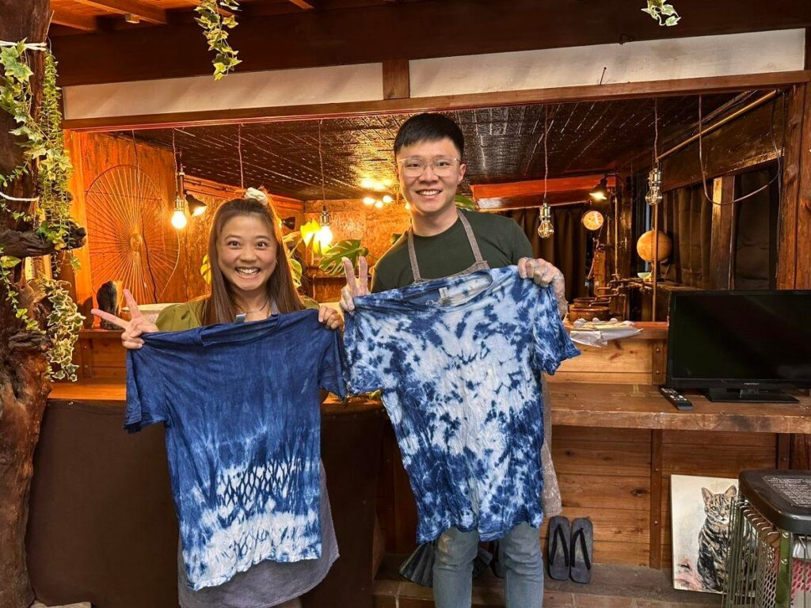

お客様自身が打った麺を山梨旅行のお土産にしてみませんか？
体験教室富士家ではお食事はいらないというお客様向けにお食事抜きの体験も行っております。
お土産用の手打ち麺作り体験や七味作り体験も行っており、シチュエーションやご要望に合わせてカスタマイズできますのでお気軽にご相談ください。
お食事なしの体験の特徴
富士家のお土産作り体験の特徴とオススメポイントをご紹介致します。
通常と同じ体験内容で楽しめる

お食事はございませんが通常と同じ体験内容になっておりますので、変わらずお楽しみいただけます。
2人前の麺

通常の体験コースではお1人様1人前となっておりますが、お土産体験では2人前となっております。
お家で楽しめる
ご家族や友人などと帰宅後に一緒にうどんの味を楽しむことができ、最高のお土産になります。

七味やすりだね体験もできる
山梨新名物のすりだね唐辛子や七味を作り体験もございます。

染物体験もできる
隣接している姉妹店では染物の体験も行っております。

こんな方におすすめ
- 時間がないけど体験してみたい方
- 食事をすでに予約している方
- お土産を作りたい方
- 染物をしてみたい方
| お食事なし麺作り体験プラン | |
|---|---|
| お土産麺作り体験 麺2人前 |
￥2,500 |
| お土産麺＋すりだね作り体験セット 麺2人前 + すりだね作り体験セット |
→￥3,980 |
| お土産麺＋七味作り体験セット 麺2人前 + お土産七味作り体験セット |
→￥3,980 |
| 山梨土産・七味作り体験プラン | |
| 七味作り体験 | ￥1,700 |
| 名物すりだね体験 | ￥1,700 |
| すりだね作り＋黒蜜きな粉餅体験 | ￥2,200 |
| 染物体験プラン | |
| 染物体験体 | ￥3,200 |
| 服染体験＋お土産麺セット 染物＋麺作り体験セット |
→￥5,500 |
| 染物体験＋すりだね作り体験セット 染物+ すりだね作り体験セット |
→￥4,500 |
| 染物体験＋七味作り体験セット 染物 + お土産七味作り体験セット |
→￥4,500 |
よくある質問
お客様からよく頂くご質問です。他にご不明点やご質問等あればお気軽にご連絡下さい。
- 体験の所要時間はどのくらいですか？
- 麺作り体験が食事の時間も含めて2時間、染物体験と調味料作り体験は40分程度となっております。
- 一人でも参加出来ますか？
- はい、お一人様でも大歓迎です。
- お土産づくり体験に対象年齢はありますか？
- 麺作り体験に関しましては対象年齢は特に設けておりません。
- 料金には何が含まれますか？
- おみやげ作り体験の料金には、容器・お花などの素材・お持ち帰りいただく紙袋が含まれます。それ以外の料金はかかりませんのでご安心ください。
- 予約なしでお店に行ってもいいですか？
- ご予約状況によってはお受けできることもございますが、基本的には前日までのご予約をお願いしております。ご協力お願い致します。
- 持ち物はありますか？
- 持ち物は特にありませんが、オイルやワックスがお洋服についてしまう可能性もありますので、なるべく万が一汚れても構わない服装でのご来店をお願いします。エプロンの貸し出しも行っております。
- 支払いにカードは使えますか？
- はい。各種クレジットカードに対応しております。そのほかPayPayでもお支払いいただけます。